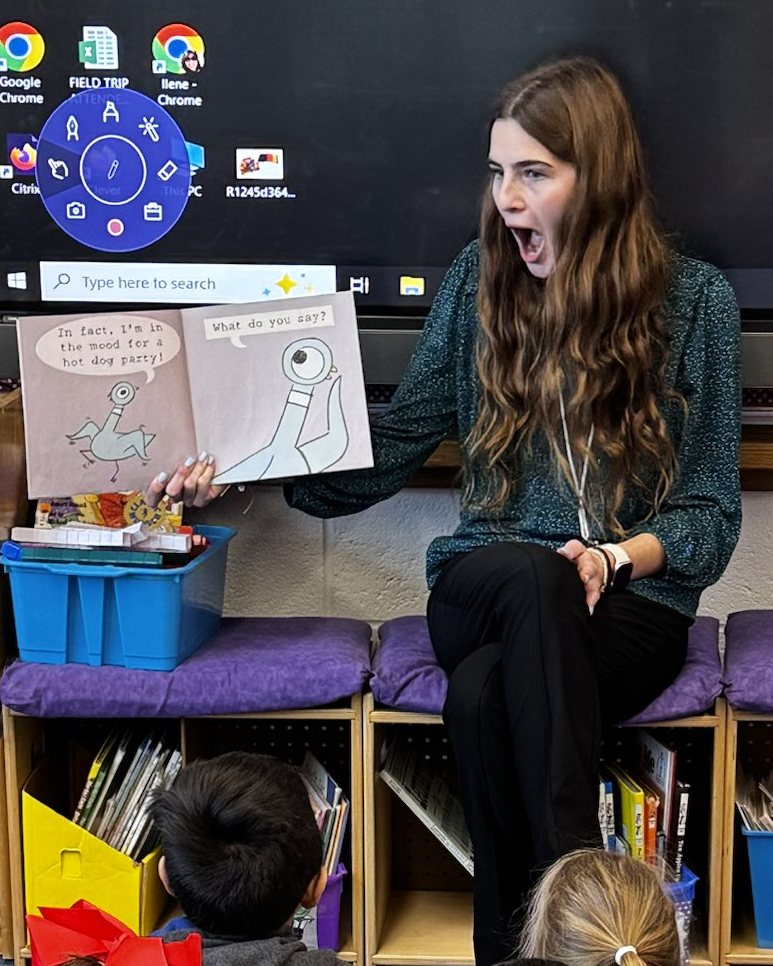

I · 4 Background Information
A Little Bit About Me
the person behind the lesson plans

story time = best time
Growing up in the Three Village community, I've spent most of my life around kids, from leading games and arts and crafts as a summer camp counselor since 2019, to supporting students as an SEA/monitor substitute and after-school childcare assistant in the Three Village Central School District.
Today I'm finishing my B.A. in Child Study with a concentration in Speech at St. Joseph's University, New York, graduating in May 2027. I've worked in Pre-K, Kindergarten, 2nd, 3rd, and 5th grade classrooms, and I'm currently student teaching in grades 5 and 3 at Minnesauke Elementary School. I'm working toward certification in Early Childhood, Childhood, and Students with Disabilities, and I can't wait to have a classroom of my own.
Fun facts & hobbies
- ⛺
Summer camp counselor for 7+ summers
- 🗣️
Concentration in Speech
- 💃
Big fan of a Friday class dance party
- 📚
Favorite read-aloud: anything starring Mo Willems' Pigeon
- 🎃
Never says no to a themed costume day